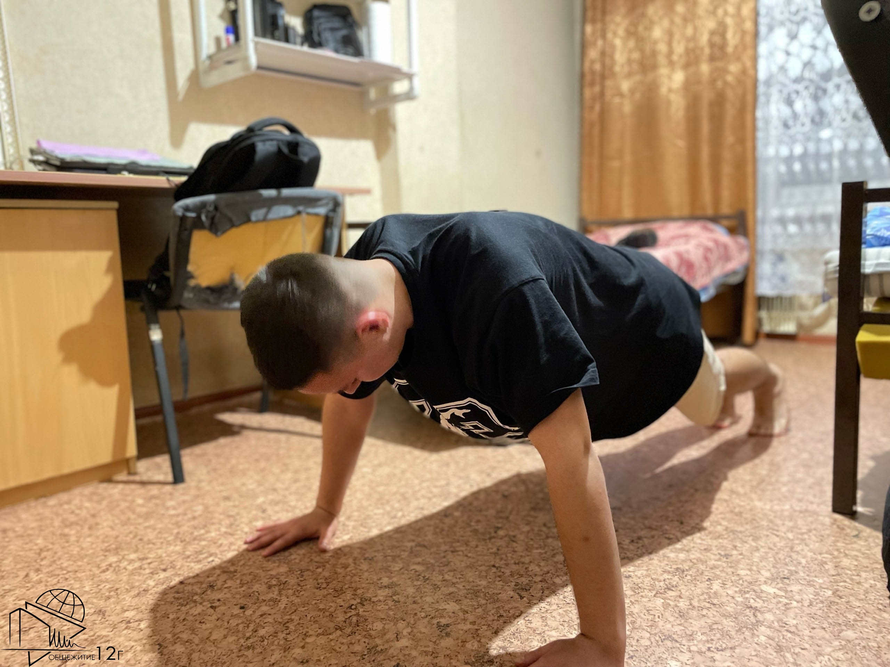

Мое общежитие 12 "ВГ"
Захватывающая история общежития
Наше общежитие и его жители прошли через многое, но немногие знают этой истории. Раннее корпус Г общежития №12 в течение многих лет был обустроен под гостиничный комплекс, в 2009 году срок аренды гостиницы истёк, и оставшийся корпус решили обустроить для иногородних студентов. Тогда-то он и получил статус общежития №12Г.


Первыми жильцами общежития стали российские студенты, а затем к ним присоединились иностранцы из Вьетнама, которые сыграли ключевую роль в ремонте. После закрытия гостиницы общежитию требовался капитальный ремонт: студенты сдирали старые обои, выносили ненужную мебель и освобождали пространство для новых комнат. Генеральные уборки продолжались до тех пор, пока помещения не приобрели цивильный вид.


Несмотря на ремонт, желающих заселиться было много, но принимали только самых трудолюбивых. Основным испытанием стала пятидневная отработка, во время которой студенты также работали над порядком в общаге. В результате за год было вывезено около 34 самосвалов мусора, который ребята собрали и вынесли собственными силами.
Внешний и внутренний вид общежития
Общежитие 12 "ВГ" ИРНИТУ представляет собой современное здание с красивой архитектурой. Обычно оно имеет несколько этажей и выполнено в светлых тонах, что придаёт ему уютный вид. На фасаде можно увидеть большой балкон, который обеспечивает хороший вид.

Вход в общежитие осуществляется через вахту. Вы сдаёте им свои пропуска и можете пройти в свою комнату. Вокруг здания часто находятся зелёные зоны, такие как газоны и кустарники, создающие приятную атмосферу.
Секционный тип общежития представляет собой разделение на блоки (секции), что делает его особенно привлекательным. В каждом блоке есть две комнаты: в одной живёт один человек, а в другой — двое. Также предусмотрены общий туалет и ванная. Кухня находится на одном этаже, а в каждом блоке есть своя мини-кухня. Такой формат проживания подходит для студентов и молодежи, создавая условия для совместной жизни и обмена опытом. Общая атмосфера в общежитии дружелюбная и способствует тому, что у вас появится много новых знакомых и друзей.

Как же заселиться в наше общежитие?
При подаче документов на поступление необходимо отметить необходимость общежития. Если места имеются, вам будет предоставлена комната. Далее вам нужно будет приехать в установленные университетом сроки заселения (информацию о сроках вам могут сообщить лично или опубликовать на сайте вуза). После этого вам следует обратиться в Центр заселения, подписать договор и получить ключ.
Из документов на оформление общежития потребуются:
- паспорт и его ксерокопия;
- фотографии 3х4 (4 штуки);
- флюорография (действующая не более года)
Что из себя предоставляет Студсовет и зачем он нужен?
Студенческий совет (студсовет) — это орган студенческого самоуправления, одна из форм проявления студенческой общественной деятельности, направленная на решение актуальных вопросов, интересующих студентов. Главная задача этого органа — создать комфортные условия для студентов. В каждом студсовете существуют различные сектора, за которые отвечают назначенные лица, заместители и активисты. Также важную роль играет Председатель, который координирует работу совета.

Какие сектора есть в общежитие 12 "ВГ":
- Информационный сектора;
- Редакционная коллегия;
- Спортивный сектор
- Санитарный сектор
- Культурно-массовый сектор
Стоит участвовать в студсовете, если вы хотите сделать свою студенческую жизнь интересной и насыщенной. Здесь вы получите ценный опыт работы с людьми и приобретете дипломатические навыки.